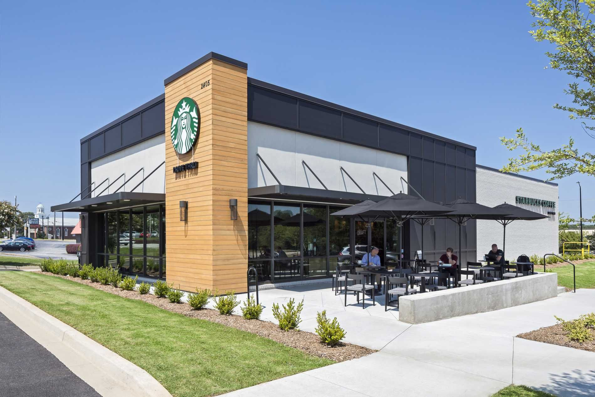
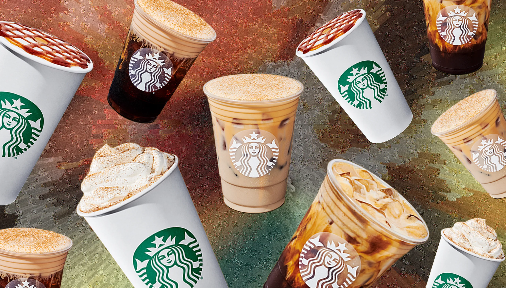

Vidio with control
Here is a video of a starbucks community and how they work together to help you with your needs.
Starbucks with Family and Friends
Here at Starbucks we are a family and friends friendly place to be with a warm and cozy environment to enjoy your favorite coffee or tea with your loved ones. This is a place where anyone can come and enjoy there time with a fast pace environment and a friendly staff to help you with your needs.
Starbucks Store

Here at Starbucks we are a fast moving environment with good employees that are friendly and helpful to your needs. We provide good customer service and a good environment to enjoy your favorite coffee or tea with your loved ones. We are located in so many city's ready to bring a smile to peoples faces and here we invite you to come on by to check out our store and spend time with good people. We have thousands of stores in the United States and around the world.
Starbucks Drinks

Her at Starbucks we provide so many drinks of your choosing you can customize any tyoe of drink we have hot and cold coffee, espresso and tea and add topping like wipped cream and cinnamon any type of candy or of your choose I have made links to help you look at our stores, menus and the history and if your wish to give feed back click on the forms link and type in your feed back and we'll respond in minutes.